SDGs terdiri dari 17 tujuan yang saling berkaitan untuk menciptakan
kehidupan yang lebih baik, adil, dan berkelanjutan bagi semua orang.
Arahkan kursor ke ikon di bawah untuk melihat detailnya!
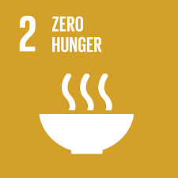
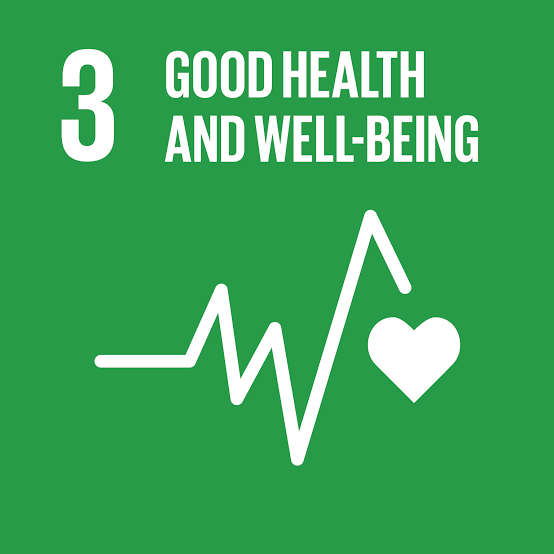
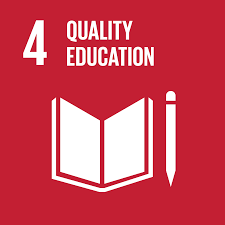
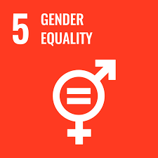
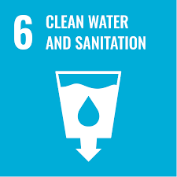
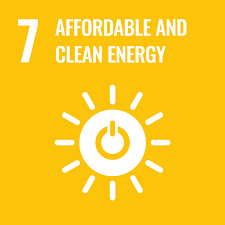
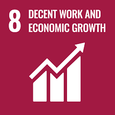
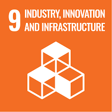
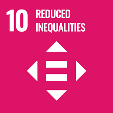
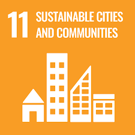
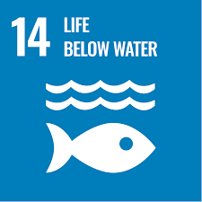
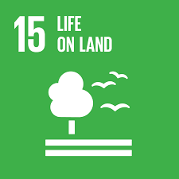
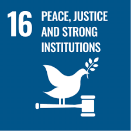
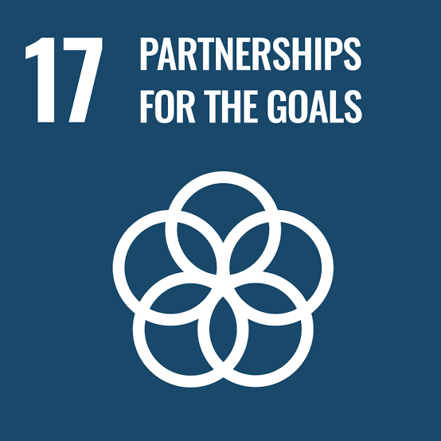
SDG 05 ★ FOKUS UTAMA● LIVE BROADCAST
Kesetaraan Gender
Mencapai kesetaraan gender dan memberdayakan semua perempuan dan anak perempuan agar memiliki kesempatan yang setara.
KESETARAAN DAN KEADILAN UNTUK SEMUA
Tidak Semua Kesempatan Setara.
Setiap orang memiliki hak dan kesempatan untuk berkembang.
Namun, diskriminasi dan kesenjangan masih menjadi hambatan
bagi banyak orang. Sudah waktunya untuk memahami masalah
tersebut dan ikut menciptakan perubahan.
Sustainable Development Goals (SDGs) atau Tujuan Pembangunan
Berkelanjutan merupakan 17 tujuan global yang dibentuk oleh
Perserikatan Bangsa-Bangsa (PBB). Tujuan ini dibuat untuk
mengatasi berbagai permasalahan sosial, ekonomi, dan
lingkungan demi menciptakan kehidupan yang lebih baik.
17 Tujuan, Satu Masa Depan
SDGs memiliki 17 tujuan yang mencakup berbagai aspek
kehidupan. Kelima kelompok utamanya adalah:
PEOPLE
PLANET
PROSPERITY
PEACE
PARTNERSHIP
★ AKSI NYATA ★SUARA TERCATATSDG 05 • KESETARAAN
Perubahan Dimulai dari Tindakan.
Kesetaraan bukan hanya tanggung jawab pemerintah.
Setiap orang dapat berkontribusi melalui tindakan sederhana,
seperti menghargai perbedaan dan tidak melakukan diskriminasi.
Pilih komitmenmu di bawah ini:
Klik salah satu tombol di atas untuk menempelkan cap komitmenmu.
.png)


.png)
.png)
.png)
.png)
.png)